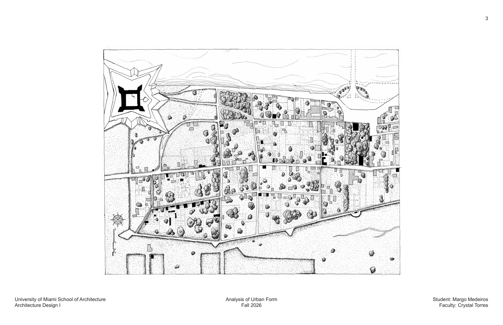
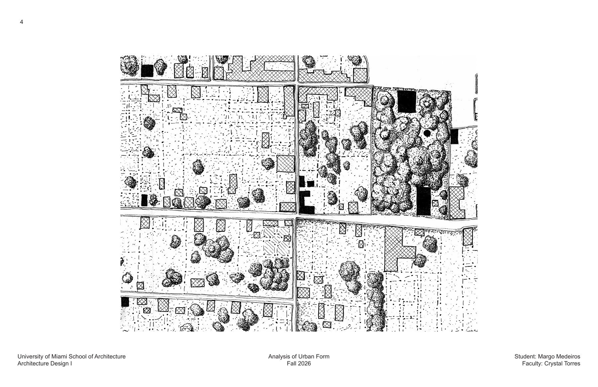
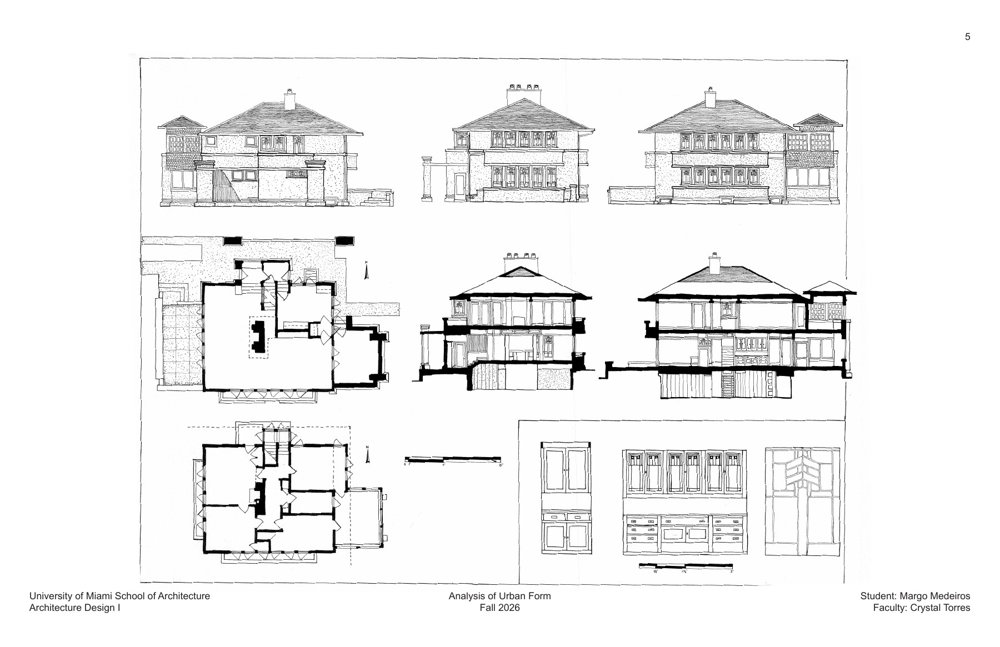
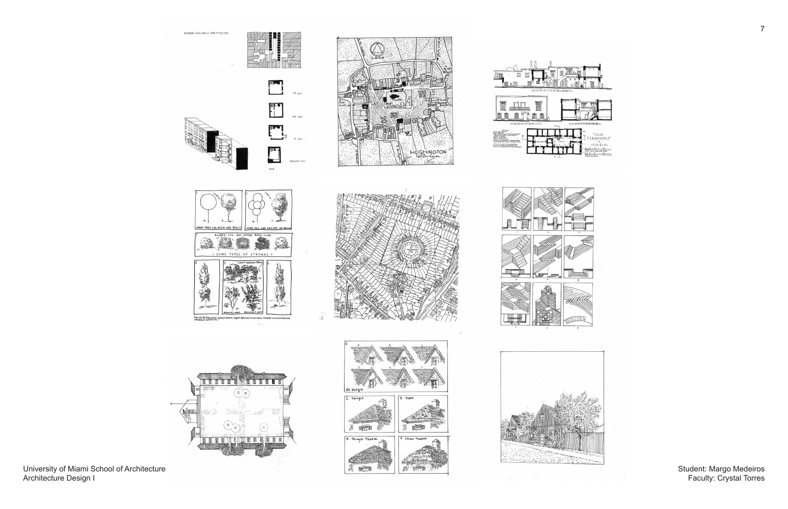

ARC 101: Design I · Fall 2026
Analysis of Urban Form and Tracing Exercises
A study of St. Augustine’s urban form paired with tracing exercises exploring architectural plans, sections, elevations, and drawing techniques.
University of Miami School of Architecture
Faculty: Crystal Torres
Analysis of Urban Form
My study of St. Augustine explores how Spanish colonial influence shapes the city’s streets, buildings, and public spaces. The Plaza de Constitución serves as a community gathering place at its center, while narrow streets and the Castillo de San Marcos reveal its historical character. Drawing the city helped me understand formative urban development.


Tracing Exercises
Tracing at the start of studio helped me begin thinking like an architect. Following each line prompted questions about line styles, materials, and what I was drawing. Through these exercises, I learned to read floor plans and sections, draw greenery and staircases, and study cities and buildings before producing my own detailed versions.
